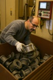
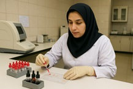
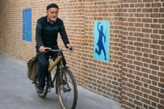
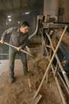
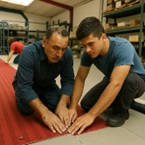

بلند کردن، نگه داشتن و حمل بار
KIM-LHC



هل دادن و کشیدن دستی بار
KIM-PP

فعالیتهای دستی
KIM-MHO



جابجایی بدنی
KIM-BM


اعمال نیرو با تمام بدن
KIM-BF



پوسچرهای بدنی نامناسب
KIM-ABP


توضیحات روش
این روش برای ارزیابی ریسکهای ناشی از بلند کردن، نگه داشتن و حمل بارهای دستی طراحی شده است. این روش به شناسایی وظایفی که ممکن است باعث آسیبهای اسکلتی-عضلانی شوند کمک میکند.
شروع ارزیابی